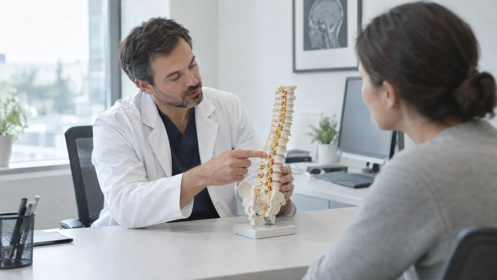

Beyin cerrahisi yalnızca beyin ameliyatı mı yapar?
Hayır. Beyin ve sinir cerrahisi; beyin, omurilik, omurga ve vücuttaki sinirlerin ameliyatla tedavi edilebilen hastalıklarına bakar. Polikliniğe sık gelen şikâyetler bel ve boyun fıtığı, kola ya da bacağa yayılan ağrı ve uyuşmadır. Kafa travması, beyin tümörü ve beyin kanaması da bu bölümün alanına girer.
Omurga ağrılarının büyük çoğunluğu ameliyat gerektirmez. İlk haftalarda aşırıya kaçmayan hareket, egzersiz ve hekimin uygun gördüğü ilaç tedavisi çoğu hastada yeterli olur. Cerrahi ise bacakta ilerleyen güç kaybı, idrar ya da dışkı kontrolünde bozulma veya aylarca geçmeyen şiddetli ağrı olduğunda gündeme gelir.
Tanıda muayene kadar görüntüleme de önemlidir. Kas gücünüz, refleksleriniz ve his kaybının dağılımı hangi sinirin etkilendiğine dair ipucu verir. Kemik yapıyı ve kanamayı tomografi iyi gösterir. Disk ve sinir ayrıntısını görmek içinse çoğu zaman MR gerekir. Sinir iletimini ölçen EMG de sıkışmanın yerini gösterebilir.

Ağrı ve uyuşma hangi noktada beyin cerrahına gösterilmeli?
- Bacağa, diz altına kadar yayılan bel ağrısı
- Kola ve parmaklara vuran boyun ağrısı, elde uyuşma
- Ayak bileğini yukarı kaldıramama ya da parmak ucunda yürüyememe
- Kısa yürüyüşte bacaklarda yorgunluk, oturunca geçen kramp
- Elde kavrama gücünün azalması, düğme iliklemekte zorlanma
- Daha önce yaşamadığınız tarzda, giderek artan baş ağrısı
- Kafa travmasından günler sonra başlayan baş ağrısı ve dalgınlık
- Altı haftalık tedaviye rağmen geçmeyen bel ya da boyun ağrısı
Acil durumda beklemeyin
İdrar ya da dışkıyı tutamama, apış arasında uyuşma, bacaklarda hızla artan güçsüzlük acil durumdur. Daha önce hiç yaşamadığınız şiddette ani baş ağrısı, kafa travması sonrası kusma ya da bilinç bulanıklığında da beklemeyin. 112'yi arayın ya da hemen acil servise başvurun.
Omurgadan beyne tedavi ettiğimiz hastalıklar
- Bel fıtığı
- Boyun fıtığı
- Dar kanal (spinal stenoz)
- Bel kayması
- Omurga kırıkları
- Kafa travması
- Beyin kanaması
- Beyin tümörleri
- Hidrosefali (beyinde sıvı birikimi)
- El bileği ve dirsekte sinir sıkışması
Sinir cerrahisinde tanı ve ameliyat seçenekleri
Nörolojik muayene
Kas gücü, refleksler, his kaybının sınırları ve yürüyüşünüz değerlendirilir. Bulgular, görüntülemede hangi omur seviyesine odaklanılacağını belirler.
Bilgisayarlı tomografi
Kafa travması ve beyin kanamasında hızlı sonuç verir. Omurgada kemik yapıyı ve kırıkları ayrıntılı gösterir.
- Süre
- Birkaç dakika
- Hazırlık
- Gebelik şüphesini çekimden önce bildirin
Mikrocerrahi ile fıtık ameliyatı
Ameliyat mikroskobu altında küçük bir kesiden girilir ve sinire baskı yapan disk parçası alınır. Hastalar çoğu zaman ertesi gün ayağa kalkar.
- Süre
- Yaklaşık 1-2 saat
- Hazırlık
- Anestezi ön değerlendirmesi
Omurga sabitleme
Bel kayması, kırık ya da ileri dar kanalda omurlar vida ve çubuklarla sabitlenir. Gerekirse sinir kanalı da aynı ameliyatta genişletilir.
Kafa travmasında izlem ve cerrahi
Hafif travmada belirli bir süre gözlem yapılır. Kafatası içinde basınç oluşturan kanamalarda ise kanamanın acil olarak boşaltılması gerekebilir.
Sinir sıkışması ameliyatı
El bileği ya da dirsekte sıkışan sinir, küçük bir kesiyle serbestleştirilir. Çoğunlukla bölgesel ya da lokal anestezi ile yapılır.
Görüntülerinizi ve şikâyet kaydınızı hazırlayın
- Önceki MR ve tomografi görüntülerini raporlarıyla birlikte getirin; yalnız rapor yeterli olmaz
- Ağrının yayıldığı yeri, örneğin baldır ya da ayak sırtı diye net tarif edecek şekilde not alın
- Uyuşma ve güçsüzlüğün başladığı tarihi ve seyrini yazın
- Denediğiniz tedavileri ve ne kadar fayda gördüğünüzü listeleyin
- Kafa travmasında olayı gören bir yakınınızı muayeneye getirin
Beyin ve Sinir Cerrahisi hekimleri

Hastalarımızın bel, boyun ve kafa travması soruları
Bel fıtığında ameliyat olmazsam felç kalır mıyım?
Fıtıkların büyük bölümü felce yol açmaz; ağrı aylar içinde kendiliğinden azalabilir. Risk, sinire ya da omuriliğe ciddi baskı olduğunda ortaya çıkar. Bu yüzden bacakta ilerleyen güç kaybı ya da idrar ve dışkı kontrolünde bozulma varsa beklemeden değerlendirme gerekir. Kararı muayene bulguları ve MR birlikte belirler.
Bel fıtığı ameliyattan sonra yeniden olur mu?
Aynı seviyede yeniden fıtık gelişebilir; bu risk sıfır değildir. Kilo kontrolü, yük kaldırırken dizleri bükmek ve gövde kaslarını güçlendirmek tekrar riskini azaltır. İlk haftalarda öne eğilerek ağır kaldırmaktan kaçının.
Kafa travmasından sonra çocuğumu uyutabilir miyim?
Muayene ve gözlem süresi tamamlandıktan sonra uyuyabilir. Hekim, ilk gece onu birkaç kez uyandırıp tepkisini kontrol etmenizi isteyebilir. Uyandırmakta güçlük, tekrarlayan kusma, nöbet ya da davranış değişikliği görürseniz hemen acil servise gelin veya 112'yi arayın.
Boyun fıtığı ameliyatı boynun önünden mi yapılır?
Çoğu boyun fıtığı ameliyatında cerrah, boynun ön tarafındaki küçük bir kesiden girer. Diski aldıktan sonra yerine kafes ya da yapay disk koyabilir. Bazı durumlarda arkadan yaklaşım daha uygundur. Hangi yolun seçileceği fıtığın yerine ve sayısına bağlıdır.
Bel ameliyatı olduktan sonra direksiyona geçebilir miyim?
Kısa yolculuklar için genellikle birkaç hafta beklemeniz gerekir. Ağrı kesici etkisindeyken ya da ani fren yapamayacak durumdaysanız direksiyona geçmeyin. Size uygun süreyi kontrol muayenesinde cerrahınız belirler; uzun yolculuklarda mola vermeyi de unutmayın.
Bu sayfayı Op. Dr. Haluk Tezcan gözden geçirdi. Son güncelleme: 7 Ekim 2026.